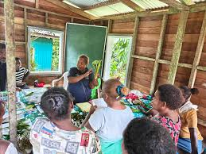
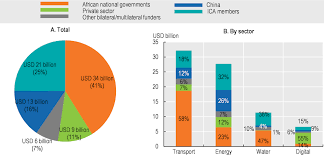
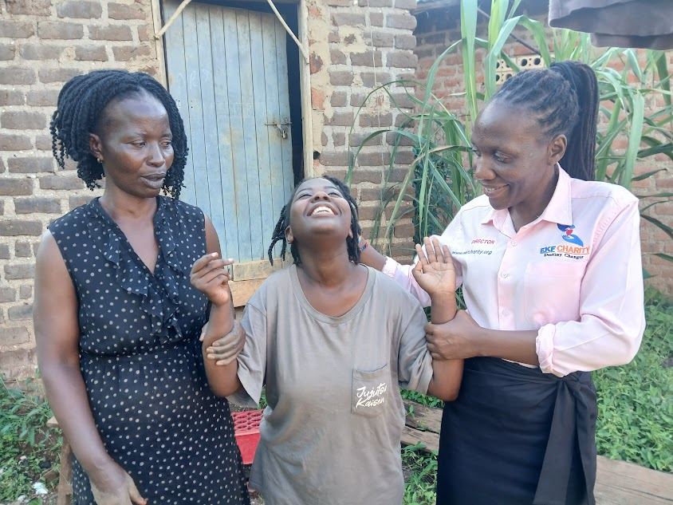
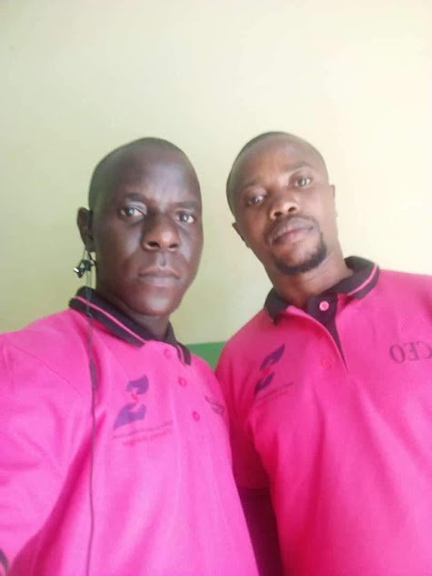
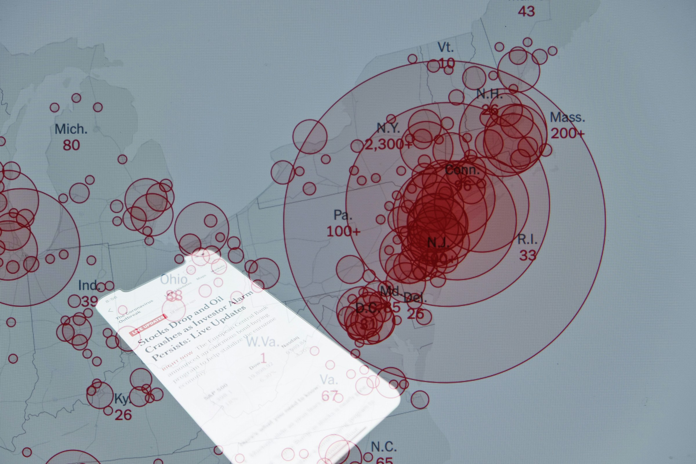
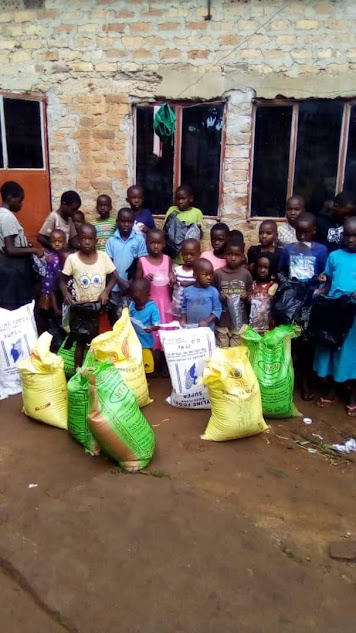
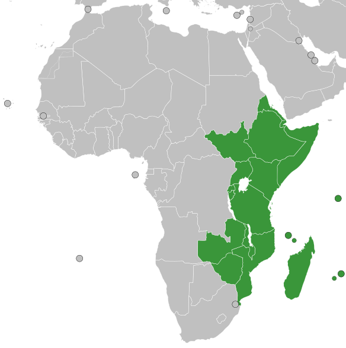
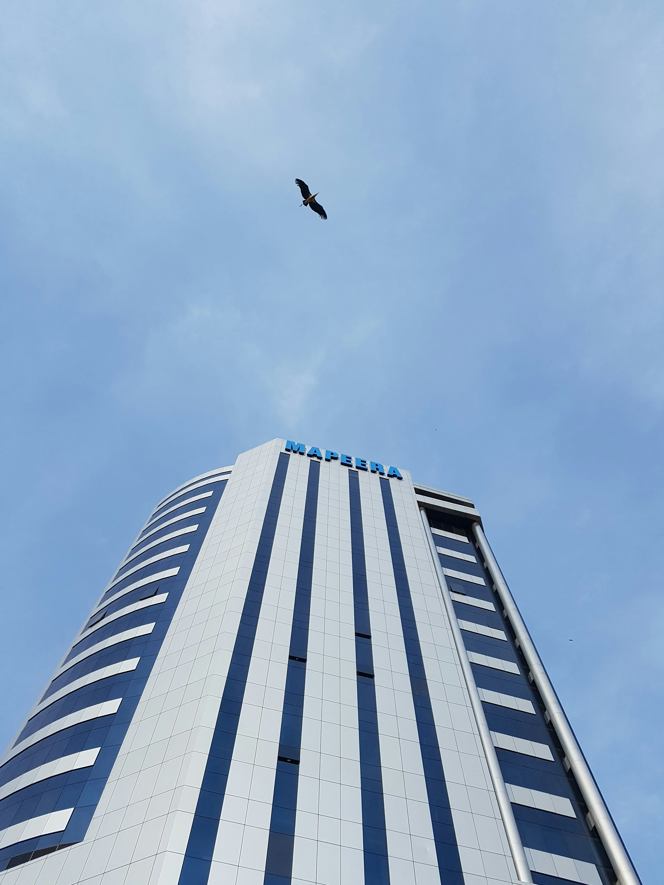

Our Model
We developed our package of solutions to address twin challenges impacting outcomes for vulnerable families within Uganda’s communities: limited access to healthcare and education, and gaps in sustainable livelihoods and protection services. Our model is built around a simple Theory of Change: that vulnerable people adopt improved health practices, keep their children in school, build income‑generating skills, and receive psychosocial support which in turn drives better well‑being, stronger families, and more resilient, self‑sufficient communities. We co‑design these solutions with vulnerable groups, local community‑based organizations, and our government partners so that they are responsive, context‑appropriate, and comprehensively tackle the barriers that have long kept vulnerable communities from thriving.
Our Model
We developed our package of solutions to address twin challenges impacting outcomes for vulnerable families within Uganda’s communities: limited access to healthcare and education, and gaps in sustainable livelihoods and protection services. Our model is built around a simple Theory of Change: that vulnerable people adopt improved health practices, keep their children in school, build income‑generating skills, and receive psychosocial support which in turn drives better well‑being, stronger families, and more resilient, self‑sufficient communities. We co‑design these solutions with vulnerable groups, local community‑based organizations, and our government partners so that they are responsive, context‑appropriate, and comprehensively tackle the barriers that have long kept vulnerable communities from thriving.

Digital Empowerment
Real‑time health alerts, educational resources, livelihood opportunities, and direct connections to support services putting vital information in the hands of vulnerable families.

Skilled, Sustainable Practices
Training community volunteers, local leaders, and caregivers in child protection, psychosocial support, HIV/AIDS sensitization, and post‑harvest food handling ensuring dignified, quality care for vulnerable groups.

Data‑Driven Insights
Analytics for government and industry partners to improve healthcare access, school enrollment, food security, and environmental conservation targeting resources where they are needed most.
Better Outcomes
Healthier families, children staying in school, women gaining economic independence, elderly receiving care, and thriving vulnerable communities across Uganda.
Vulnerable communities access life‑changing support when and where they need it and receive immediate help if health, hunger, or protection risks arise.
GROW empowers vulnerable communities with real‑time information on health services, school enrollment, and food security via SMS and mobile alerts. Through two‑way communication, families can ask questions, report protection concerns, and receive targeted support or referral to social services when a health, hunger, or safety risk is identified.

Training and quality assurance for community volunteers and social workers to improve child protection, psychosocial support, and sustainable livelihood practices.
FIELDS provides structured training programs for community volunteers, caregivers, social workers, and local leaders focusing on child protection protocols, psychosocial counseling techniques, HIV/AIDS sensitization methods, emergency response procedures, and sustainable income‑generating activities. Our platform tracks skill gaps and certifies trainers, ensuring consistent quality and sustainability across community support systems.

Data‑driven insights for government and community partners to improve health services, education access, financing, and social protection policies.
PULSE aggregates anonymised data from vulnerable family interactions, community service referrals, and social worker reports to provide real‑time dashboards for government partners (Ministries of Health, Education, and Gender) and community stakeholders. These insights help optimise resource allocation, design better policies for child protection and healthcare access, and target investments where they are needed most creating a more resilient and transparent social support ecosystem for vulnerable communities.

SUSTAINABILITY
Our vision of an “end game” at scale is our government partners along with district local governments and community groups leading and sustainably financing cost‑effective innovations within Uganda’s community development and social welfare systems. Over time, EKFcharity has earned trust and buy‑in from a network of vulnerable family groups, district governments, and national ministry partners (including Health, Education, Gender, and Agriculture) by involving them in the design process, demonstrating measurable impact, and building affordable solutions that sustainably integrate into resource‑constrained government budgets and the broader social sector.
SUSTAINABILITY
Our vision of an “end game” at scale is our government partners along with district local governments and community groups leading and sustainably financing cost‑effective innovations within Uganda’s community development and social welfare systems. Over time, EKFcharity has earned trust and buy‑in from a network of vulnerable family groups, district governments, and national ministry partners (including Health, Education, Gender, and Agriculture) by involving them in the design process, demonstrating measurable impact, and building affordable solutions that sustainably integrate into resource‑constrained government budgets and the broader social sector.

Partnered with county governments
We partner with 22 Ugandan district local governments to deploy health, education, and livelihood solutions.
Endorsed by national ministries
Endorsed for scale by the Ministries of Health, Education, and Gender
Supported by government Budgets
District governments are sharing up to 60% of the running costs of our community‑based programs including child protection committees, HIV/AIDS sensitization, and psychosocial support services
WHERE WE WORK
We have Ugandan roots and global ambitions
Since 2015, EKFcharity has worked with district local governments and national ministries (Health, Education, and Gender) to improve health outcomes, school enrollment, food security, and child protection for vulnerable families across Uganda. Guided by a mission to reach every vulnerable child, youth, woman, and elderly person, our focus is on scaling further within Uganda while adapting our model and capitalizing on our learnings to serve marginalized communities in new geographies. We currently partner with district governments in Central, Eastern, and Western Uganda to test and adapt our solutions to support national development priorities, with ambitious plans to grow our footprint across East Africa in the coming years.

WHERE WE WORK
We have Ugandan roots and global ambitions
Since 2015, EKFcharity has worked with district local governments and national ministries (Health, Education, and Gender) to improve health outcomes, school enrollment, food security, and child protection for vulnerable families across Uganda. Guided by a mission to reach every vulnerable child, youth, woman, and elderly person, our focus is on scaling further within Uganda while adapting our model and capitalizing on our learnings to serve marginalized communities in new geographies. We currently partner with district governments in Central, Eastern, and Western Uganda to test and adapt our solutions to support national development priorities, with ambitious plans to grow our footprint across East Africa in the coming years.


Uganda
EKFcharity partners with 22 district local governments and national ministries to deliver health, education, and livelihood programs. We co‑design scalable solutions that integrate into government systems focusing on child protection, food security, and community empowerment.
Our Work in Uganda →